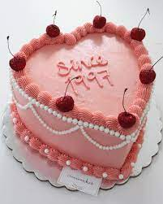

Sobre mí
Me gusta pasar tiempo con mi familia, en especial con mis sobrinos. No soy mucho de salir porque prefiero la tranquilidad del hogar. Me gusta mucho la reposteria, he soñado con poner mi propia reposteria. Tengo un gusto musical muy variado pero últimamente he escuchado lo que es el trap, soy mucho de escuchar musica en ingles y español, en ingles escuho lo que es pop y rock, de vez en cuando el trap en ingles. Me gusta ver series y peliculas, las series que me gustan son coreanas, acción, ficción, romance y las peliculas que me gustan son de terror y romance.
Lo que me gusta

Música
